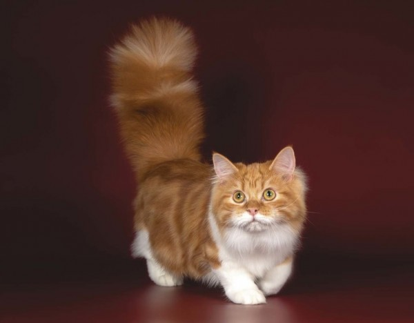

Кошка породы Манчкин

Всегда котенок
Игривый характер
Исследователь
Активность 24/7
Манчкины — очень необычные кошки. При средней длине тела их лапки короче, чем у обычных кошек в 2-3 раза, из-за этой особенности их иногда называют таксами. Но внешним видом странности не ограничиваются. Тогда как обычные кошки, чтобы осмотреться, встают на задние лапки, манчкин садится на седалище и крепко упирается хвостом. В таком положении кошки могут находиться в течение довольно продолжительного времени, а свисающие по бокам короткие передние лапки придают сходство с кенгуру и корги.
Краткие сведения:
- невероятно любопытные кошки, готовые к путешествиям и открытиям;
- терпеливые по отношению к другим животным и маленьким детям;
- трудно найти более ласковую и преданную породу.
История происхождения
Первые упоминания об этой породе встречаются в конце ХIХ века, однако, официально история манчкинов начинается в 1983 году, когда учительница музыки Сандра Хоченедел из Луизианы подобрала беременную коротколапую кошечку и назвала ее Ежевичкой. Вскоре родились котята-коротконожки, которые и стали официальными представителями породы. Впервые манчкины были представлены широкой публике в 1991 году на кошачьей выставке, но были восприняты негативно, как больные и нежизнеспособные животные. Позже генетические исследования показали, что короткие лапы у этой породы – результат естественной мутации генов, отвечающих за длину конечностей. К счастью, эта мутация не несет никакого вреда здоровью кошки, и они не страдают проблемами с позвоночником. В 1995 году манчкины были официально признаны Международной Ассоциацией кошек и сейчас активно разводятся по всему миру и имеют массу поклонников. В 2001 году представители этой породы были впервые завезены в Россию.
Характер
Кроме своей милой внешности манчкины обладают приятным доброжелательным и игривым характером. Эти кошки очень ласковые и контактные, совершенно незлопамятные, хорошо ладят с маленькими детьми, не выпуская коготки даже на тисканья и таскание за хвост. С другими кошками и даже собаками эти миниатюрные красавцы также находят общий язык. Они обожают валяться на коленях у хозяина, мурлыкая негромкую песенку, а если вы задержитесь на работе, не будет разносить всю квартиру или обижаться.
Несмотря на короткие лапы, манчкины обожают все исследовать: они с легкостью запрыгивают на самые высокие шкафы и диваны, засунут свой нос в самые потайные уголки и обязательно стянут поиграть блестящие предметы, так что держите украшения и хрупкие статуэтки в недоступном для кошки месте. Эти кошки обожают прогулки и путешествия, совершенно не пугаясь новых мест, незнакомых людей или шума. Манчкины с удовольствием прогуливаются на шлейке и даже могут ездить в автомобиле, не предпринимая попыток вырваться в окно или разодрать когтями весь салон.